食後眠くならない最強の食事術
ビジネスパーソンのための午後のパフォーマンス革命
はじめに: 午後の眠気はあなたのせいではない
第1章: 血糖値スパイクのメカニズム〜なぜ眠くなるのか
血糖値スパイクとは何か
血糖値が急上昇するとき、体の中で何が起きているか
眠気だけではない: 血糖値スパイクがもたらす長期的リスク
あなたの眠気は「血糖値スパイク」のサインか？チェックリスト
なぜ昼食後に特に眠くなるのか
第1章のまとめ
第2章: 食べ順革命〜ベジファーストとプロテインファーストの科学
食べ順が血糖値を変える
ベジファーストのメカニズム: 腸の壁を守る食物繊維の力
プロテインファーストの追加効果
カーボラストで完成する「食べ順トリオ」
外食でもできる「食べ順」実践術
「よく噛む」も食べ順と同じくらい重要
朝食の食べ順が昼食・夕食の血糖値も決める
第2章のまとめ
第3章: 低GI食品の真実〜GI値の使い方と落とし穴
GI値とは何か
主要食品のGI値一覧: 高GIと低GIの差
GI値の3つの落とし穴
低GI食品を選ぶための実践的ガイド
白米を諦めなくていい: 「食べ方」でGIを下げる技
血糖値スパイクを防ぐ「食品の組み合わせ」戦略
第3章のまとめ
第4章: 食後運動・酢・朝食タンパク質の実践テクニック
第4章は「即効性」の章
テクニック1: 食後ウォーキングで血糖値を「逃がす」
なぜ食後に歩くと血糖値が下がるのか
科学的データ
実践方法: 「食後15分ルール」
オフィスでできる「ちょこちょこ歩き」
テクニック2: 酢の活用「アシッドブレーキ」
酢が血糖値スパイクを抑える2つのメカニズム
科学的データ
実践方法: 「酢水」「ドレッシング」「酢の物」から選ぶ
酢の選び方と注意点
テクニック3: 朝食タンパク質で「今日一日」の血糖値を守る
朝食が昼食・夕食の血糖値を決める
朝食タンパク質の目標量
時間がない朝でもできるタンパク質強化
テクニック4（ボーナス）: 緑茶・コーヒーの賢い活用
緑茶のカテキンが血糖値スパイクを抑える
第4章のまとめ
第5章: 習慣化と環境設計〜眠気ゼロの午後を仕組みで作る
なぜ「わかっているのにできない」のか
習慣化の科学: キュー・ルーティン・リワードの3ステップ
If-Thenプランニングで行動を自動化する
環境設計: 「正しい選択が最も簡単な選択」になる仕掛け
職場の環境設計
自宅の環境設計
睡眠の質が血糖値コントロールに与える影響
ストレス管理も血糖値コントロールの一部
30日チャレンジ: 段階的な習慣化プログラム
自分の変化を記録する
第5章のまとめ
おわりに: 眠気ゼロの午後を手に入れよう
01はじめに: 午後の眠気はあなたのせいではない
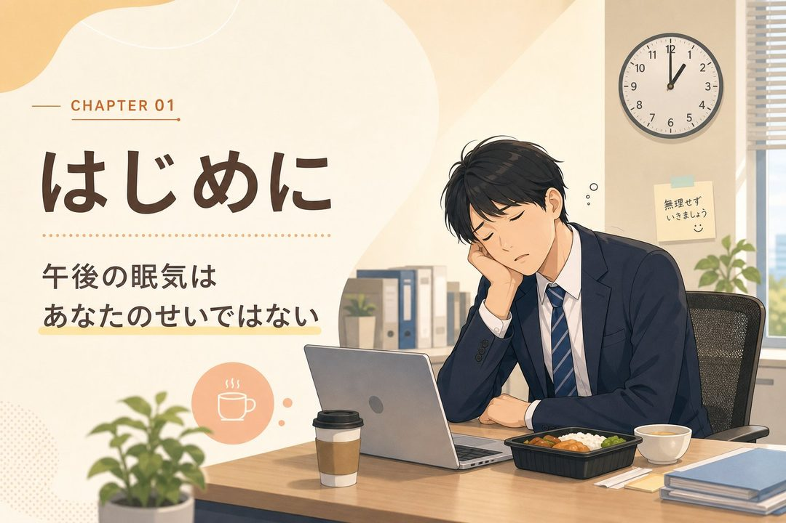
はじめに
昼食を終えた午後1時。
会議室の椅子に座ったあなたは、プレゼンターの声がだんだん遠くなるのを感じる。
まぶたが重い。
ペンを握る手からも力が抜けていく。
「また眠くなってしまった」と自分を責めていないだろうか。
これは意志の弱さでも、睡眠不足でもない。
あなたの体内で起きている血液中の糖の急激な変動、すなわち「血糖値スパイク」が引き起こす生理現象なのだ。
日本のビジネスパーソンの多くが、この現象に悩んでいる。
ある調査では、30〜50代の会社員の約70%が「昼食後に強い眠気を感じる」と回答している。
コーヒーやエナジードリンクで無理やり覚醒しようとしているが、それは根本的な解決にはなっていない。
本書は、血糖値スパイクのメカニズムを科学的に解説し、明日から実践できる具体的な対策を提供する。
食事の順番を変えるだけ、酢を少し加えるだけ、食後に少し歩くだけ。
大きな食事制限も、高価なサプリメントも必要ない。
眠気のない午後を手に入れることは、想像よりずっと簡単だ。
本書を読み終えたとき、あなたはきっとこう思うだろう。
「もっと早く知っていれば良かった」と。
さあ、血糖値スパイクの正体を暴き、あなたの午後を取り戻す旅を始めよう。
02第1章: 血糖値スパイクのメカニズム〜なぜ眠くなるのか
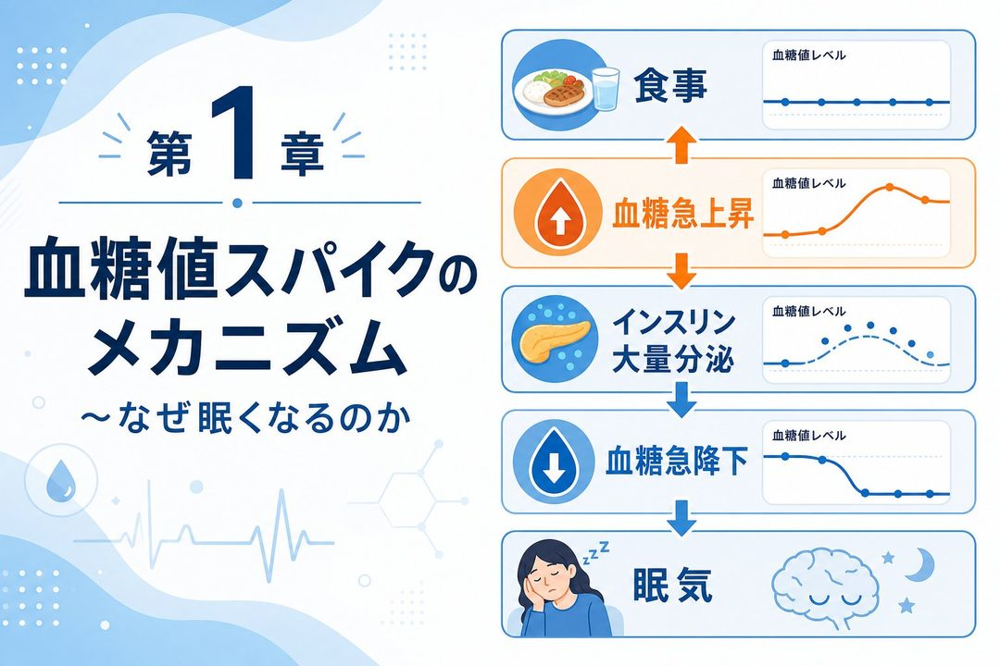
第1章 血糖値スパイクのメカニズム
血糖値スパイクとは何か
「血糖値スパイク」という言葉を聞いたことはあるだろうか。
医学的には「食後高血糖」と呼ばれ、食事後に血糖値が急激に上昇し、その後急降下する現象を指す。
通常、空腹時の血糖値は70〜100mg/dLの範囲に収まっている。
食後は誰でも血糖値が上がるが、健康な状態では140mg/dLを超えることはほとんどない。
ところが、血糖値スパイクが起きると、食後わずか30〜60分で180mg/dL以上にまで跳ね上がることがある。 このグラフの山型の急激な上昇と下降が「スパイク（棘）」のように見えることから、この名前がついた。
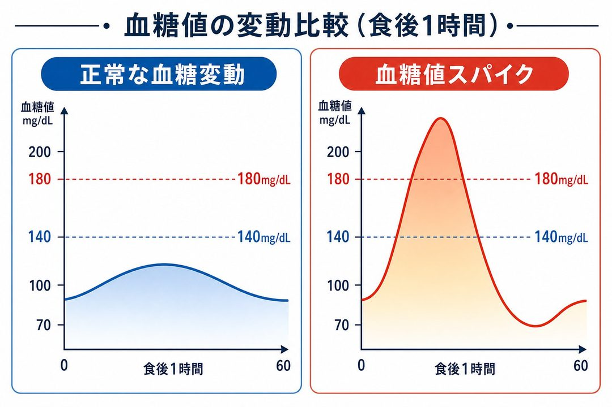
正常な血糖変動 vs 血糖値スパイク
血糖値が急上昇するとき、体の中で何が起きているか
炭水化物を食べると、消化管でブドウ糖に分解されて血液に吸収される。
血糖値が上がると、膵臓のβ細胞がインスリンというホルモンを分泌する。
インスリンはブドウ糖を細胞に取り込ませ、血糖値を下げる働きをする。
血糖値スパイクが問題なのは、血糖値が急激に上がりすぎるとインスリンが過剰分泌されてしまうことだ。
大量のインスリンが分泌されると、今度は血糖値が必要以上に下がりすぎる。
これを「反応性低血糖」と呼ぶ。
脳は全エネルギーの約20%をブドウ糖で賄っているため、血糖値が急落すると脳がエネルギー不足に陥る。
このエネルギー不足が、あの激しい眠気の正体だ。
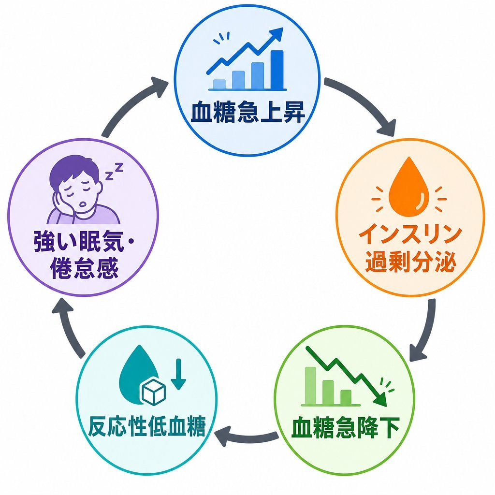
血糖値スパイクの悪循環
眠気だけではない: 血糖値スパイクがもたらす長期的リスク
食後の眠気は「今日の問題」だが、血糖値スパイクを放置すると「明日の問題」が積み重なっていく。
血管ダメージ: 血糖値が急上昇するたびに、血管の内壁（内皮細胞）が傷つく。
これが積み重なると動脈硬化が進み、心筋梗塞や脳梗塞のリスクが高まる。
細胞の糖化（老化加速）: 余分な血糖がタンパク質と結合して「AGEs（終末糖化産物）」を生成する。
AGEsは組織を硬くし、肌のシワ・たるみ、臓器の機能低下を引き起こす。
実は老化の主犯格の一つだ。
インスリン抵抗性: 血糖値スパイクを繰り返すと、細胞がインスリンに反応しにくくなる「インスリン抵抗性」が生じる。
これが進むと2型糖尿病へと移行する。
認知機能低下: 最新の研究では、慢性的な食後高血糖が脳の海馬（記憶をつかさどる部位）の萎縮と関連することが示されている。
「午後は集中できない」の積み重ねが、長期的な認知機能に影響する可能性があるのだ。
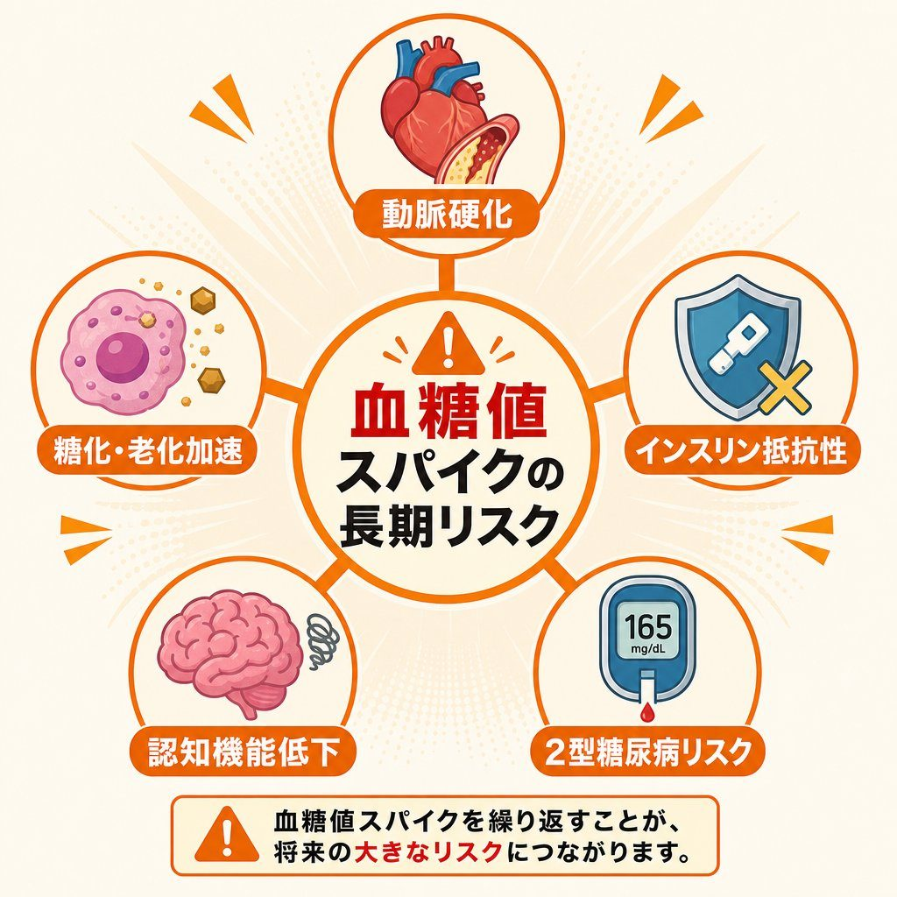
血糖値スパイクがもたらす長期リスク
あなたの眠気は「血糖値スパイク」のサインか？チェックリスト
以下の項目に3つ以上当てはまる人は、血糖値スパイクが起きている可能性が高い。
- □ 昼食後30分〜1時間後に強い眠気が来る
- □ コーヒーを飲んでも午後に眠くなる
- □ 甘いものを食べると一時的に元気になるが、すぐにまた眠くなる
- □ 白米・パン・麺類を昼食によく食べる
- □ 昼食をかき込む（食事時間が10分以内）
- □ 朝食を抜くことがある
- □ 最近、以前より疲れやすくなった気がする
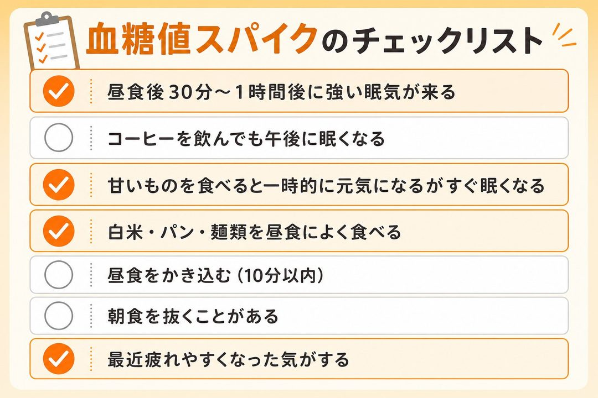
血糖値スパイクのチェックリスト
なぜ昼食後に特に眠くなるのか
「昼食後の眠気は自然なもの」と思っている人も多いが、実は食事以外の要因も重なっている。
概日リズムの影響: 人間の体内時計は、昼食後の午後1〜3時頃に自然な「休息フェーズ」を迎える。
これに血糖値スパイクによる眠気が重なると、抗えないほどの強烈な眠気になる。
消化に伴う血流変化: 食後は消化器官に血液が集中し、脳への血流が相対的に減少する。
これが眠気を助長する一因だ。
インスリンとセロトニン: 血糖値が上昇すると、アミノ酸のトリプトファンが脳に取り込まれやすくなる。
トリプトファンは睡眠ホルモン・メラトニンの前駆物質であるセロトニンに変換されるため、食後に眠くなるメカニズムの一つとなっている。
これらの要因が重なり合うことで、昼食後の眠気は特に強くなる。
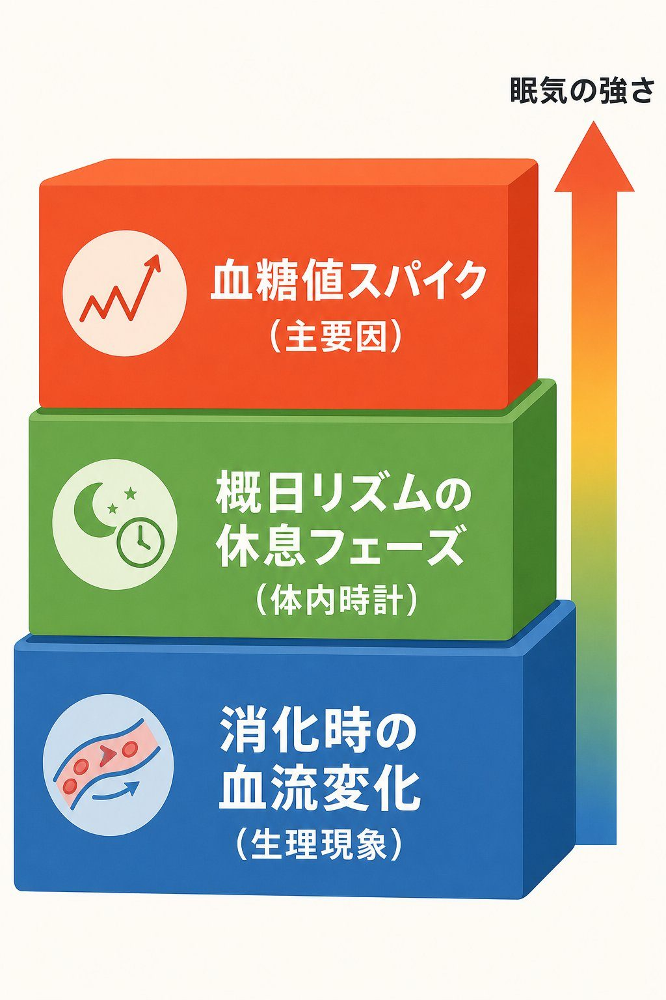
昼食後の眠気が生じる3層構造
第1章のまとめ
血糖値スパイクとは、食後に血糖値が急激に上昇・急降下する現象だ。
インスリンが過剰分泌されて「反応性低血糖」が起き、脳がエネルギー不足になることが眠気の正体だ。
放置すると血管ダメージ・老化加速・インスリン抵抗性・認知機能低下などのリスクがある。
昼食後は概日リズム・消化による血流変化も重なり、眠気が特に強くなる。
良いニュース: 血糖値スパイクは生活習慣の改善で確実に抑えられる。
次章からは、その具体的な方法を一つずつ解説していく。
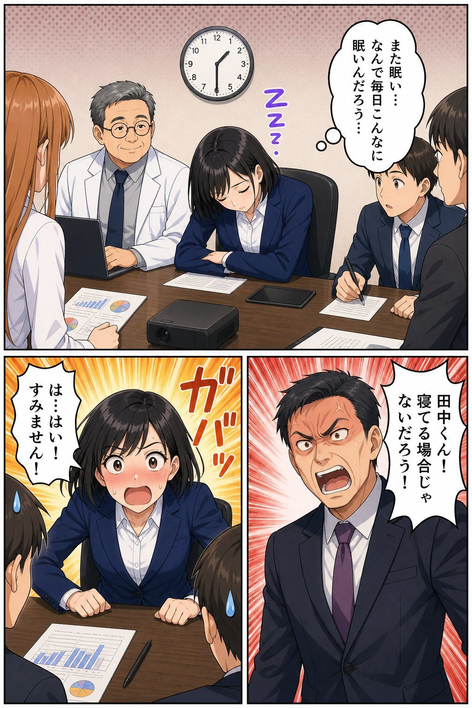
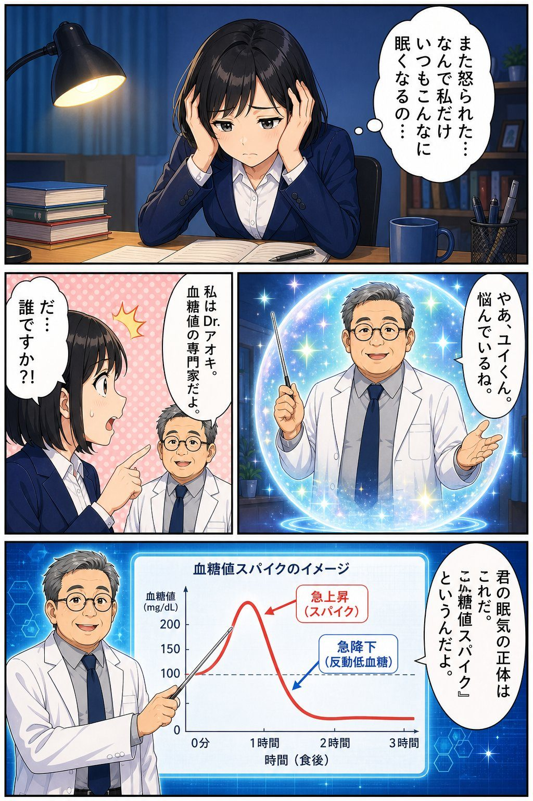
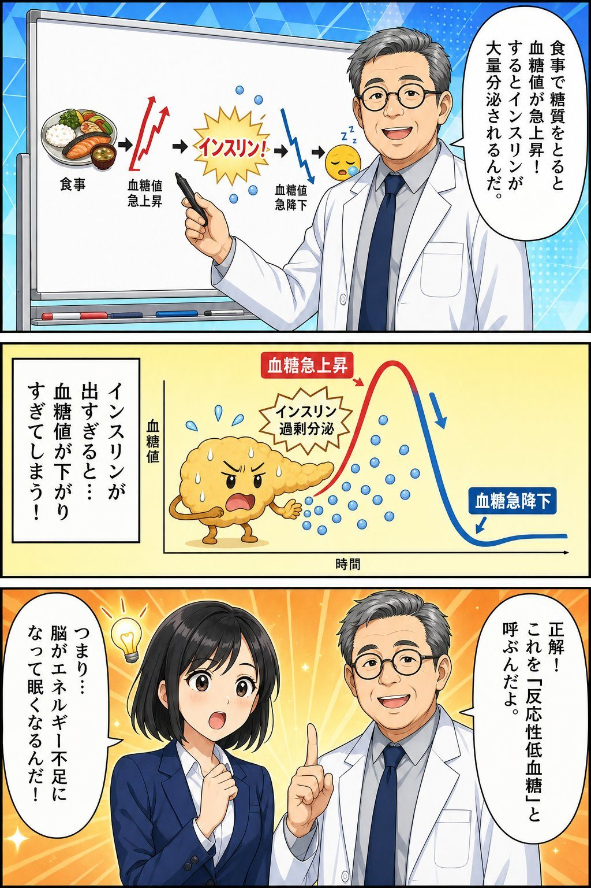
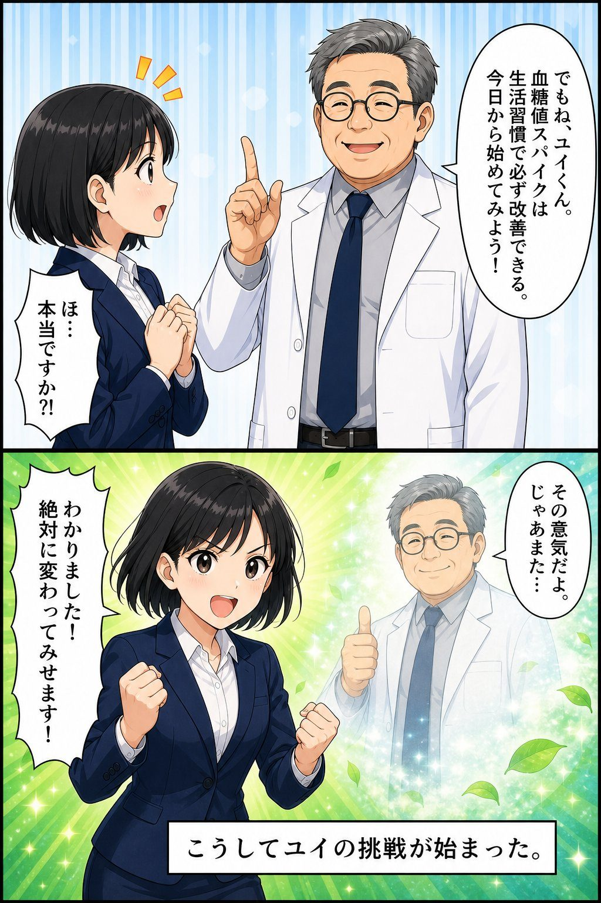
03第2章: 食べ順革命〜ベジファーストとプロテインファーストの科学
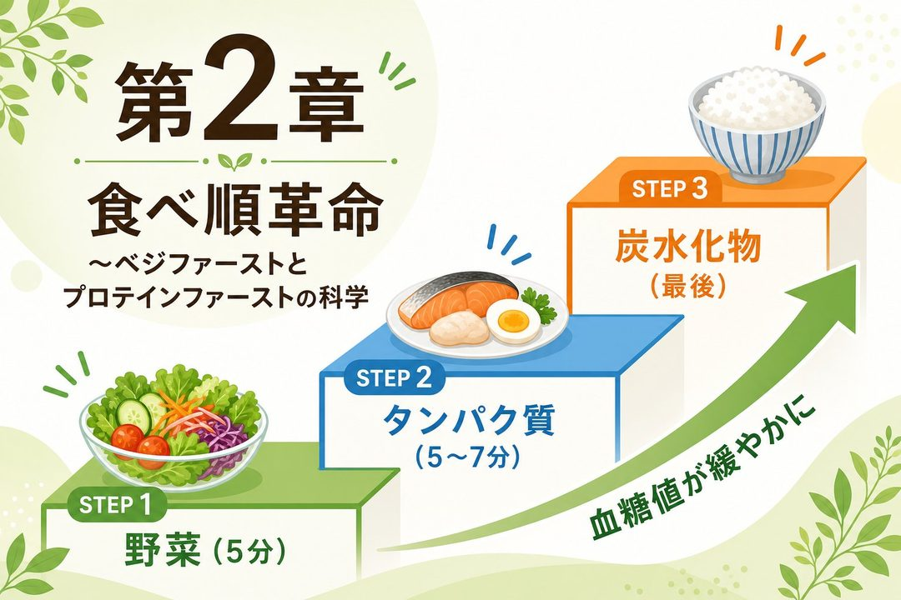
第2章 食べ順革命
食べ順が血糖値を変える
「食べる順番を変えるだけで血糖値スパイクが防げる」と聞いて、「そんな簡単なこと？」と思う人もいるかもしれない。
しかし、これは多くの研究で実証されている科学的事実だ。
2014年の研究（Obesity誌掲載）では、同じ食事でも「炭水化物を先に食べるグループ」と「野菜・タンパク質を先に食べるグループ」を比較したところ、食後30分・60分・120分の血糖値とインスリン値が野菜・タンパク質先食いグループで有意に低いことが示された。
その後も多数の研究が追試し、「食べ順効果」は現在では食後高血糖の予防・改善に有効な手法として多くの医療機関で推奨されている。
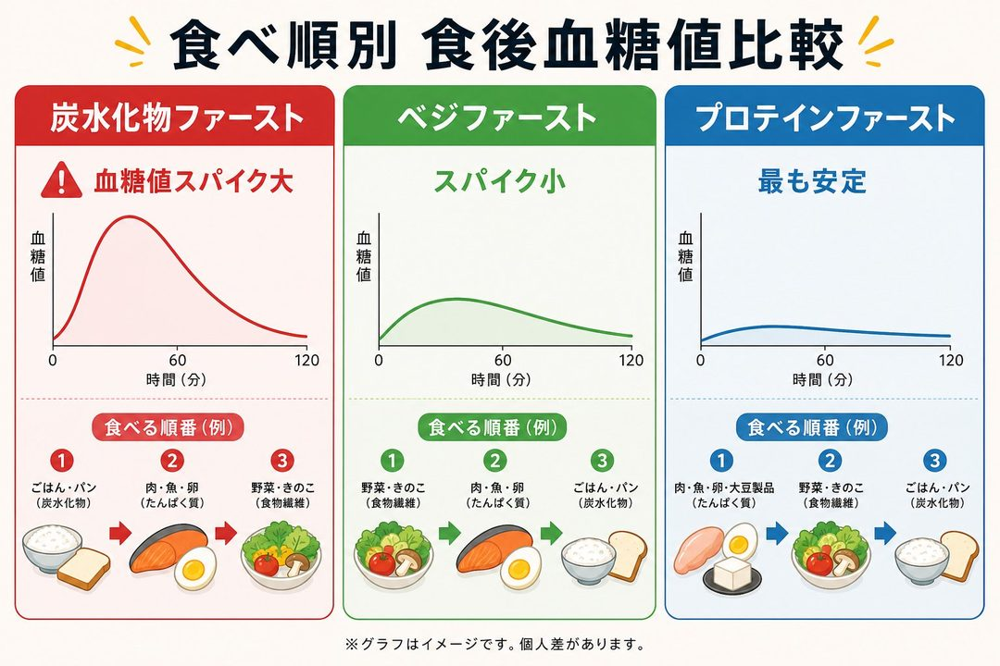
食べ順別 食後血糖値比較
ベジファーストのメカニズム: 腸の壁を守る食物繊維の力
野菜を最初に食べると血糖値スパイクが抑えられる理由は、主に食物繊維の働きによる。
物理的障壁の形成: 野菜の食物繊維が腸の内壁に膜のような層を作り、後から入ってくる糖質の吸収速度を遅らせる。
これを「フードマトリックス効果」と呼ぶ。
糖が一気に血液に流れ込まず、時間をかけてゆっくり吸収されるため、血糖値の上昇が緩やかになる。
GLP-1の分泌促進: 食物繊維が腸のL細胞を刺激し、「インクレチン」と呼ばれるホルモンの一つGLP-1（グルカゴン様ペプチド-1）が分泌される。
GLP-1はインスリン分泌を促進すると同時に、胃の蠕動運動を遅らせて食べ物の腸への移行速度を緩める。
結果として、血糖値の急上昇が抑制される。
満腹感の向上: 食物繊維は水分を吸収して膨張し、物理的に胃を満たす。
最初に野菜を食べることで満腹感が得られ、後から食べる炭水化物の量を自然に抑えられる。
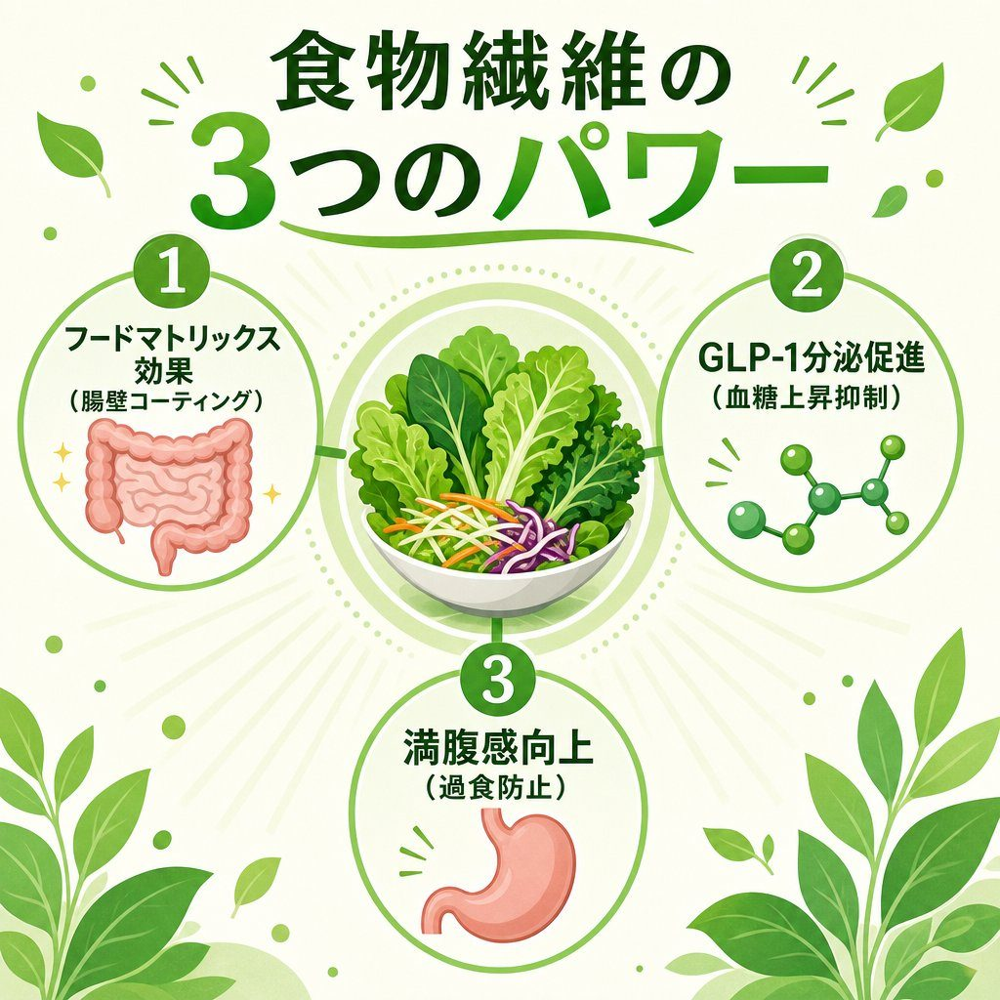
食物繊維が血糖値スパイクを抑える3つのメカニズム
プロテインファーストの追加効果
野菜の次にタンパク質（肉・魚・卵・大豆製品）を食べることにも大きな意味がある。
タンパク質自体のGLP-1刺激: タンパク質は食物繊維と同様にGLP-1の分泌を促進する。
野菜でGLP-1を分泌した後、さらにタンパク質でGLP-1を追加分泌させることで、より確実に血糖上昇を抑えられる。
食事誘発性熱産生（DIT）の上昇: タンパク質は三大栄養素の中で最も食事誘発性熱産生が高い（約30%のエネルギーが消化に使われる）。
これにより食後のエネルギー消費が高まり、血糖処理が効率化される。
筋肉合成への優先供給: タンパク質を先に摂取することで、アミノ酸が効率よく筋肉に届く。
筋肉量が維持・増加すると、インスリン感受性が向上し、長期的な血糖コントロールが改善される。
カーボラストで完成する「食べ順トリオ」
「野菜→タンパク質→炭水化物」の順番、すなわち「ベジファースト＋プロテインファースト＋カーボラスト」が理想的な食べ順だ。
ポイントは各ステップに時間をかけることだ。
野菜を5分かけてゆっくり食べる。
次にタンパク質を5〜7分かけて食べる。
最後に炭水化物を食べ始めるのは食事開始から約12〜15分後が理想的だ。
この時間差が重要で、GLP-1が十分に分泌される時間を確保することで、炭水化物が入ってきたときにすでに血糖上昇への防御態勢が整っている。
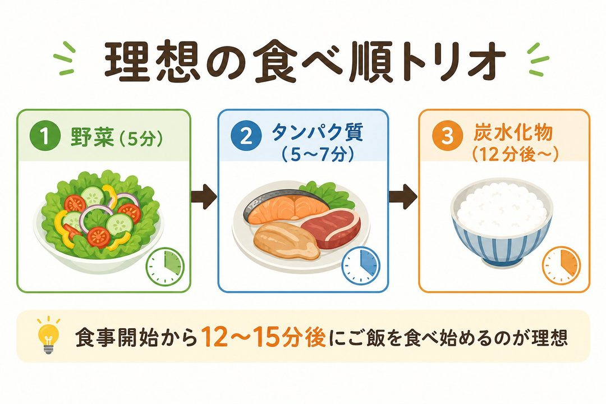
理想の食べ順トリオ
外食でもできる「食べ順」実践術
「ベジファーストはわかったけど、外食でどうやるの？」という疑問に答えよう。
定食を選ぶ場合: 最初にサラダやお浸しなどの小鉢から手をつける。
次に魚や肉の主菜を食べ、最後にご飯をよそる。
丼・ラーメンしか選択肢がない場合: 注文時にサラダや冷奴をサイドに追加する。
これだけで食べ順を実践できる。
コンビニランチの場合: サラダ→サラダチキンやゆで卵→おにぎりの順で食べる。
パックサラダを先に開封することで、自然に食べ順が守られる。
会議のお弁当の場合: 蓋を開けたら、まず副菜から手をつける。
野菜のおかずを食べ終えてから主菜、最後にご飯という順番にする。
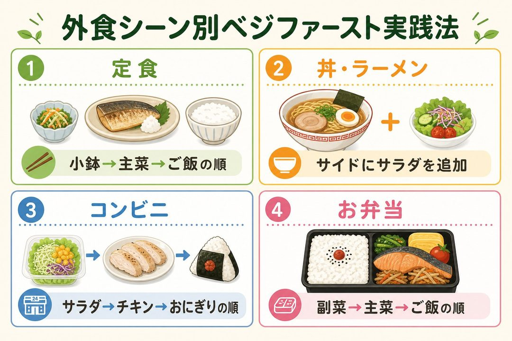
外食シーン別・食べ順実践法
「よく噛む」も食べ順と同じくらい重要
食べ順とセットで重要なのが「咀嚼回数」だ。
一口30回を目安によく噛むことで、以下の効果が得られる。
消化酵素（アミラーゼ）が糖質を小さな単位に分解する時間が増え、吸収速度が緩やかになる。
よく噛むことで満腹ホルモン・レプチンが分泌され、過食を防げる。
また、食事に20分以上かけることも重要だ。
満腹感を感じるまでに約20分かかるため、早食いは過食につながる。
ゆっくり食べるだけで、炭水化物の摂取量が自然に減る。
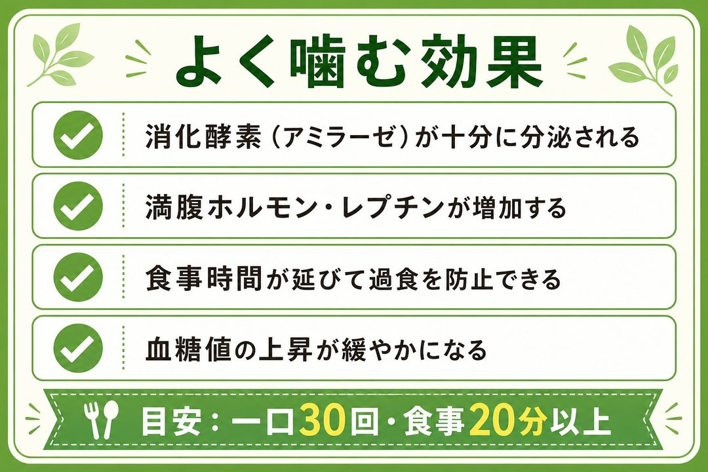
よく噛む効果チェックリスト
朝食の食べ順が昼食・夕食の血糖値も決める
食べ順の効果は、その食事だけにとどまらない。
早稲田大学の研究（栄養学誌Nutrients掲載）では、朝食でベジファースト・プロテインファーストを実践すると、昼食・夕食後の血糖値上昇も抑制されることが明らかになった。
これは「セカンドミール効果」と呼ばれる現象だ。
朝食でGLP-1が分泌されると、そのホルモン効果が昼食時にも持続し、昼食後の血糖上昇を抑えるのだ。
つまり、午後の眠気を防ぎたいなら、朝食の食べ順から変える必要がある。
朝食の食べ順を変えることは、昼食後のパフォーマンスへの先行投資だと考えよう。
第2章のまとめ
食べ順は「野菜→タンパク質→炭水化物（カーボラスト）」が基本だ。
食物繊維はフードマトリックス効果とGLP-1分泌促進で血糖上昇を抑える。
タンパク質はさらにGLP-1を追加分泌し、血糖処理を効率化する。
外食・コンビニ・弁当でも「先にサイドメニューから食べる」だけで実践できる。
朝食の食べ順がセカンドミール効果で昼食・夕食の血糖値にも影響する。
食べ順という「無料で今日から始められる」対策を、まず習慣化しよう。
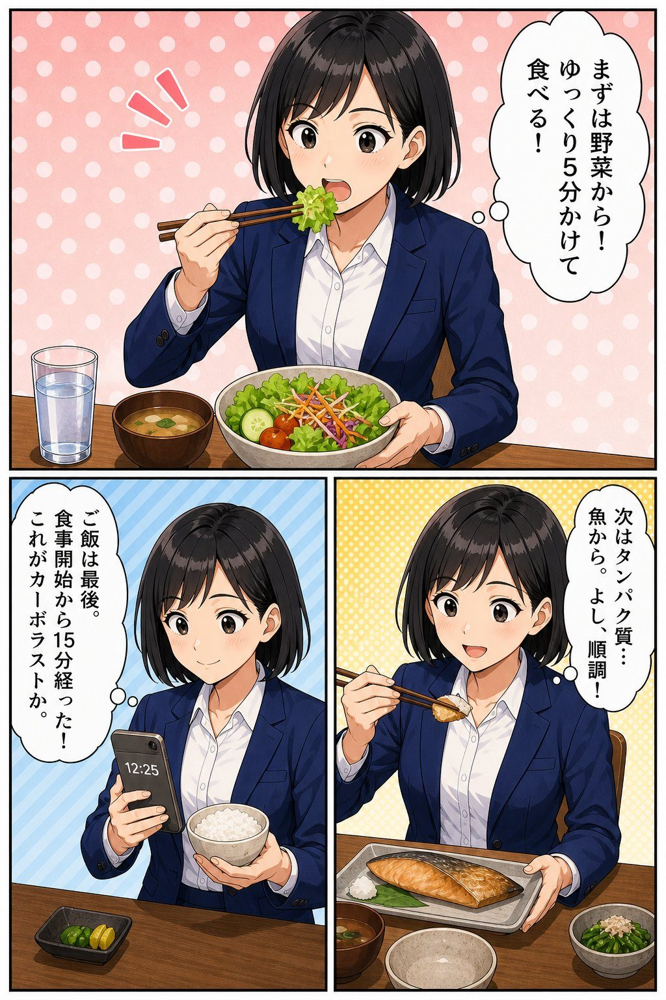
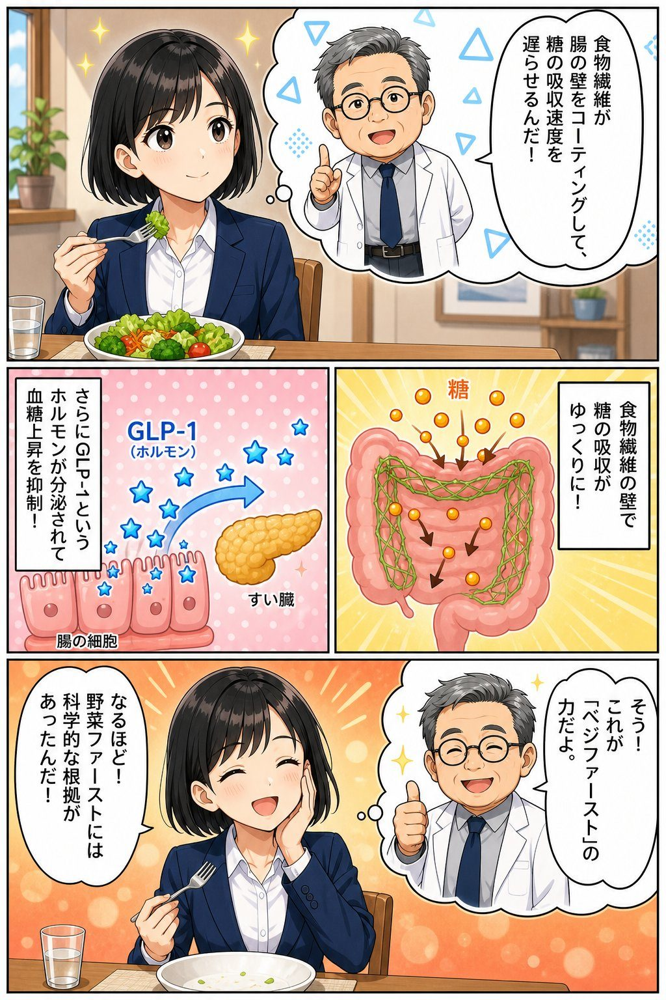
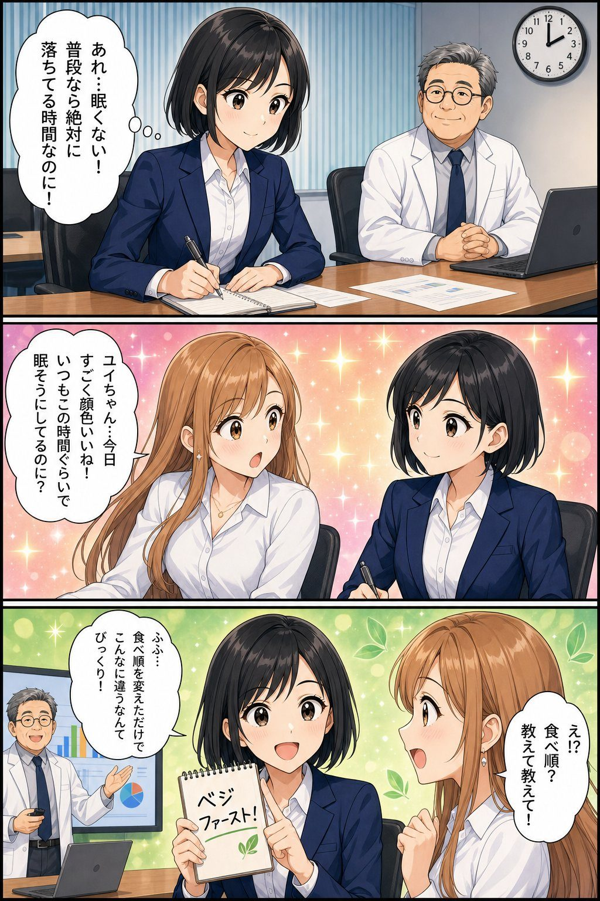
04第3章: 低GI食品の真実〜GI値の使い方と落とし穴
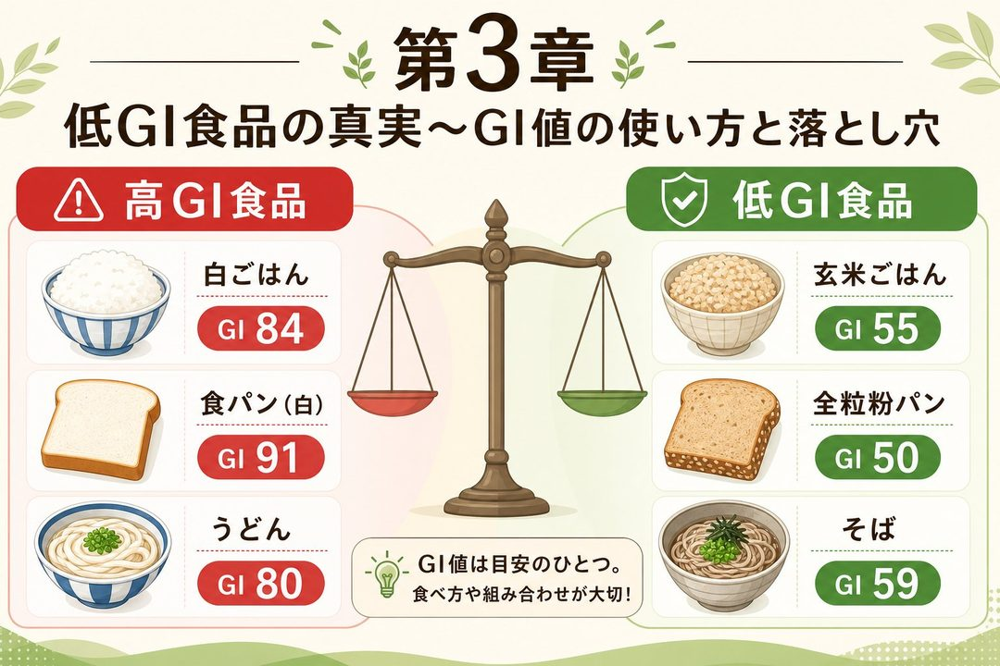
第3章 低GI食品の真実
GI値とは何か
「GI（グリセミック指数）」は、食後の血糖値上昇速度を示す指標だ。
ブドウ糖（グルコース）を100として、各食品が血糖値をどれだけ上げるかを相対的に表す。
一般的に、GI値70以上を高GI食品、56〜69を中GI食品、55以下を低GI食品と分類する。
低GI食品を選ぶことで血糖値スパイクを抑えられるのは確かだが、GI値だけで食品を選ぶのには重大な落とし穴がある。
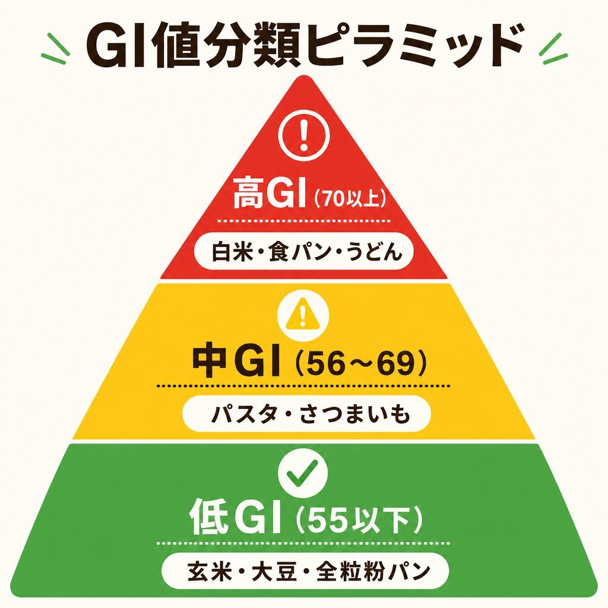
GI値による食品分類
主要食品のGI値一覧: 高GIと低GIの差
代表的な食品のGI値を見てみよう。
【高GI食品（70以上）】
食パンのGI値は91と非常に高く、朝食でトーストを食べると昼食後の血糖値スパイクを助長する可能性がある。 うどんはGI値80で、昼食によく食べる人は要注意だ。 白米はGI値84。 日本人の主食だが、毎食大量に食べると血糖値スパイクのリスクが高まる。
【低GI食品（55以下）】
玄米のGI値は55。
食物繊維とビタミンB群が豊富で、白米の代替として最適だ。
大豆・豆腐・納豆はGI値30〜40台と非常に低い。
タンパク質も豊富で血糖値スパイク対策に理想的だ。
全粒粉パンはGI値50前後。
白いパンの代わりに選ぶだけで血糖上昇を緩やかにできる。
そばはGI値59で、麺類の中では比較的低い。
昼食にうどんの代わりにそばを選ぶのは賢い選択だ。
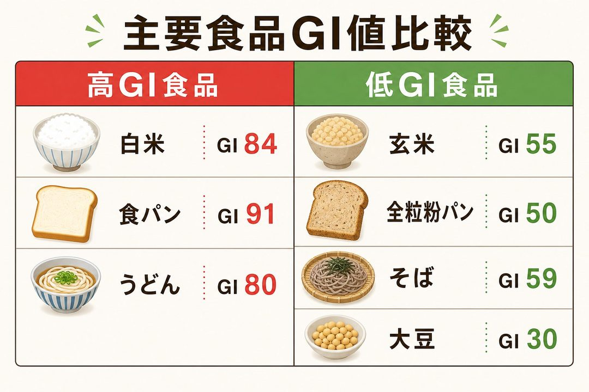
主要食品GI値比較
GI値の3つの落とし穴
GI値は有用な指標だが、鵜呑みにすると失敗する。
以下の3つの落とし穴を知っておこう。
落とし穴1: 調理法でGI値が変わる
同じジャガイモでも、茹でたジャガイモはGI値66だが、マッシュポテトになると83に跳ね上がる。
白米も冷やしてから食べると（冷やしご飯・寿司）GI値が下がる。
これは「レジスタントスターチ（難消化性でんぷん）」が増えるためだ。
落とし穴2: 食品の組み合わせでGI値は変わる
食品を単独で食べたときのGI値と、他の食品と組み合わせて食べたときのGI値は異なる。
例えば、白米（高GI）でも納豆と一緒に食べると血糖上昇が緩やかになる。
GI値は単品で測定された値なので、実際の食事では「食べ合わせ」が重要だ。
落とし穴3: GL値（グリセミック負荷）の方が実用的
GI値は「血糖値の上がりやすさ」を示すが、「食べる量」は考慮していない。
そこで重要なのがGL値（グリセミック負荷）だ。
GL値 = GI値 × 炭水化物量（g）÷ 100
例えば、スイカはGI値72と比較的高いが、スイカ100gに含まれる炭水化物は約8gと少ないため、GL値は5.8と低い。
一方、白米は茶碗1杯（150g）で炭水化物が約55gあるため、GL値は46.2と非常に高くなる。
GL値10以下を低負荷、11〜19を中程度、20以上を高負荷と考えるとよい。
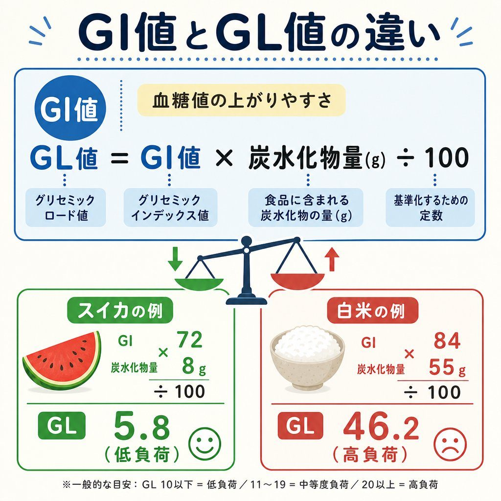
GI値とGL値の違い
低GI食品を選ぶための実践的ガイド
理屈はわかった。
では実際にどう選べばいいのか。
以下に「主食の置き換えガイド」をまとめた。
米: 白米 → 玄米（または白米に雑穀を混ぜる）。
雑穀米は食物繊維が豊富で食後血糖の上昇が緩やかだ。
炊き込みご飯も具材の食物繊維・タンパク質が加わるため血糖上昇が抑えやすい。
パン: 食パン → 全粒粉パン・ライ麦パン。
色が濃いほど食物繊維が豊富で低GIだ。
サンドイッチを作るなら全粒粉パンを選ぶだけで血糖コントロールが改善する。
麺: うどん → そば・全粒粉パスタ。
そばはGI値が比較的低く、タンパク質も豊富。
パスタもアルデンテ（硬め）に茹でると低GIになる（でんぷんの糊化が少ない）。
おやつ: 菓子パン・スナック菓子 → ナッツ・チーズ・ゆで卵。
ナッツ類は脂質とタンパク質が豊富でGI値が低く、血糖値をほとんど上げない。
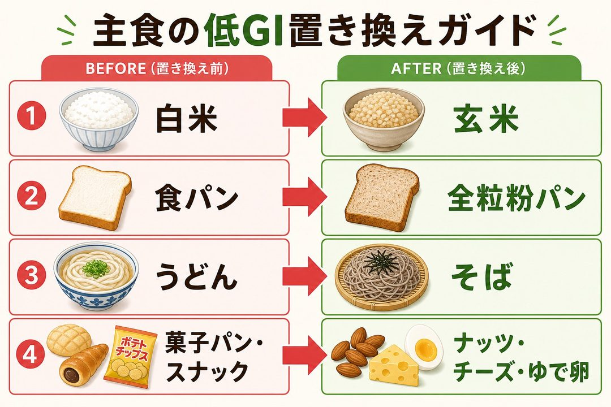
主食の低GI置き換えガイド
白米を諦めなくていい: 「食べ方」でGIを下げる技
「玄米に変えると家族が食べてくれない」「外食では選べない」という声もある。
実は白米のまま血糖値スパイクを抑える方法もある。
冷やして食べる: 炊き立ての白米を冷蔵庫で一晩冷やすと、レジスタントスターチが増加してGI値が下がる。
冷たいまま食べるのが難しければ、軽く温める程度にとどめよう（完全に再加熱するとレジスタントスターチが減少する）。
酢飯にする: 酢を加えることで胃の排出速度が遅くなり、血糖上昇が緩やかになる（詳しくは第4章で解説）。
雑穀を混ぜる: 白米に大麦・もち麦・キヌアなどを混ぜるだけで食物繊維量が増え、GI値が下がる。
もち麦は白米に20〜30%混ぜるだけで食後血糖値が有意に下がることが確認されている。
量を減らす: 白米を食べるなら、量を普段より20〜30%減らすだけでGL値が大幅に低下する。
減らした分はタンパク質（豆腐・卵・肉）や野菜で補おう。
血糖値スパイクを防ぐ「食品の組み合わせ」戦略
低GI食品を選ぶだけでなく、「食品の組み合わせ」でも血糖上昇を抑えられる。
食物繊維 × 炭水化物: 炭水化物を食べる際に食物繊維豊富な食品（野菜・海藻・きのこ）を組み合わせると、糖の吸収速度が下がる。
タンパク質 × 炭水化物: 肉・魚・卵・大豆製品と炭水化物を組み合わせると、食後血糖値の上昇が緩やかになる。
定食スタイルの食事が優れているのはこのためだ。
脂質 × 炭水化物: オリーブオイルなどの良質な脂質は胃の排出を遅らせ、血糖上昇を抑える。
ただし脂質の過剰摂取は肥満につながるため、適量を守ること。
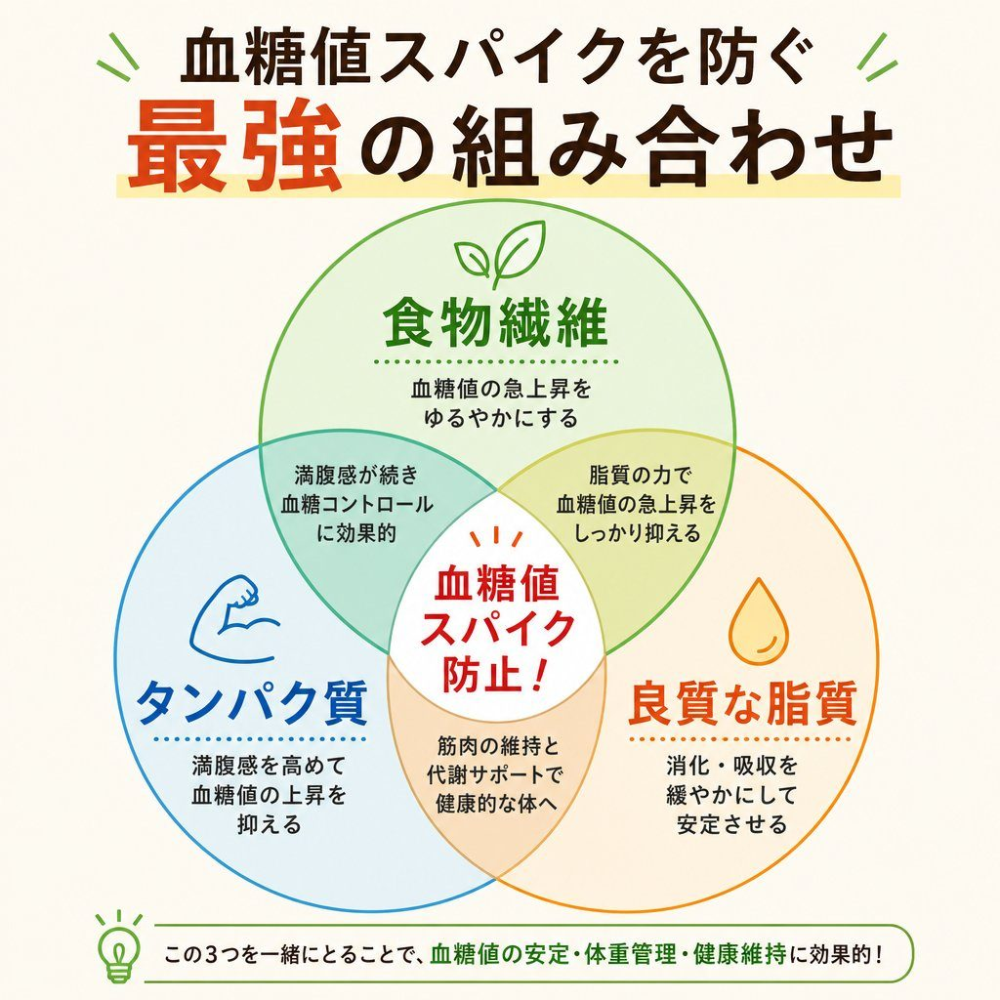
血糖値スパイクを防ぐ食品の組み合わせ
第3章のまとめ
GI値は食後血糖値の上昇速度を示す指標で、55以下が低GIの目安だ。
調理法・食品の組み合わせ・量でGI値は変動するため、GL値（GI×炭水化物量÷100）も参考にする。
主食は白米→玄米、食パン→全粒粉パン、うどん→そばに置き換えるだけで効果が出る。
白米を諦めなくてもよい。
冷やして食べる・雑穀を混ぜる・量を減らすなどで対応できる。
低GI食品を選ぶことは「血糖値を下げる」のではなく「血糖値スパイクを防ぐ」手段だ。
食べ方と組み合わせることで、より大きな効果が得られる。
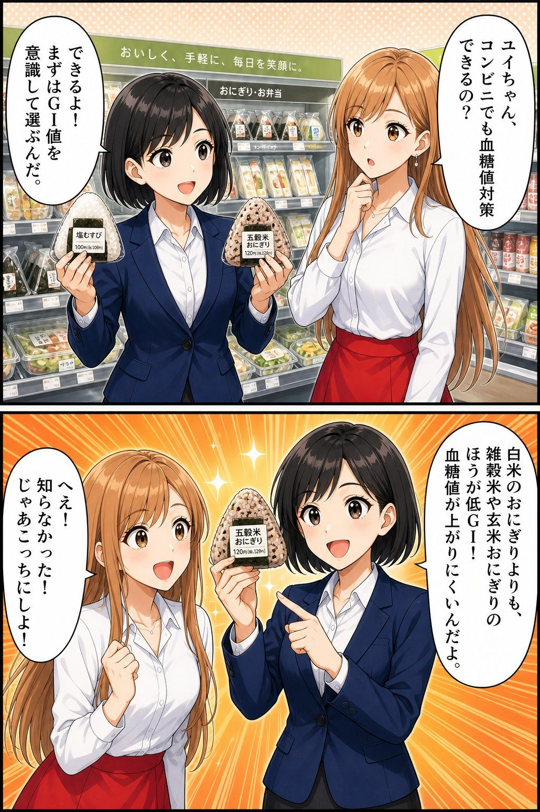
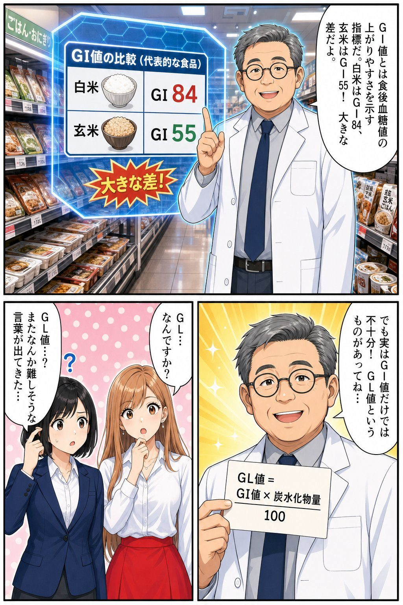
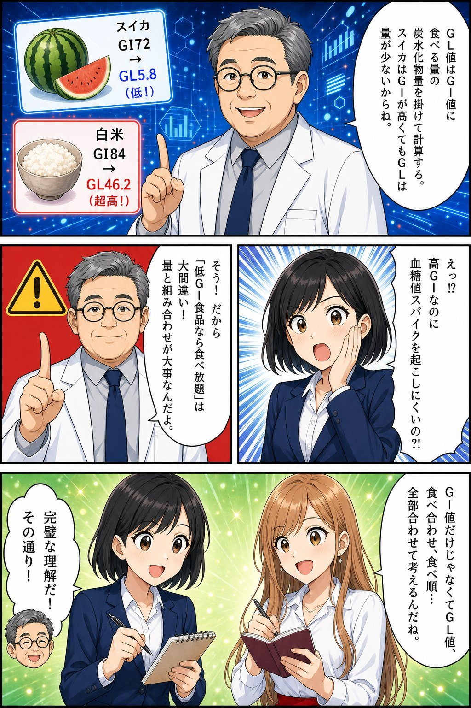
05第4章: 食後運動・酢・朝食タンパク質の実践テクニック
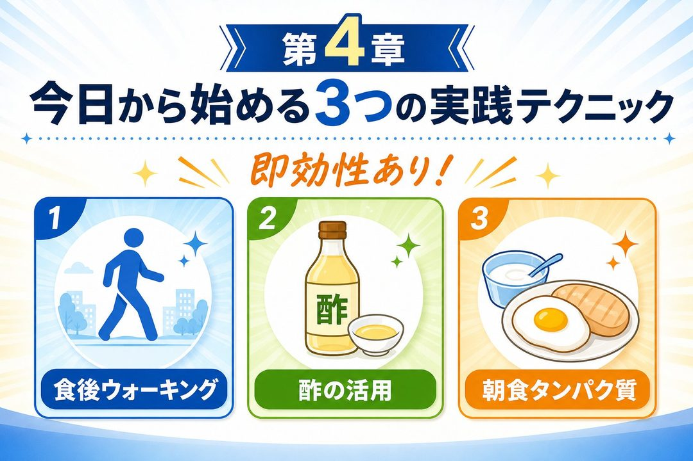
第4章 実践テクニック
第4章は「即効性」の章
第2章・第3章では「食べ方」と「食品選択」について学んだ。
第4章では、より即効性が高く、今日から始められる3つの実践テクニックを紹介する。
1. 食後の軽い運動（ウォーキング）
2. 酢の活用「アシッドブレーキ」
3. 朝食タンパク質の増量
これらはそれぞれ独立した効果があるが、組み合わせることでより強力な相乗効果を発揮する。
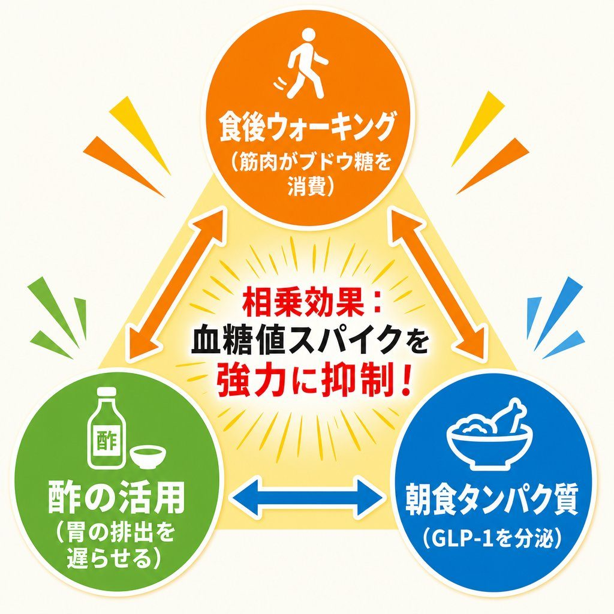
3つの実践テクニックの相乗効果
テクニック1: 食後ウォーキングで血糖値を「逃がす」
なぜ食後に歩くと血糖値が下がるのか
筋肉が運動すると、インスリンの助けを借りずに血中のブドウ糖を直接取り込む仕組みが活性化する。
これは「GLUT4の転位」と呼ばれるメカニズムで、筋収縮が引き金となってブドウ糖の取り込みが始まる。
つまり、食後に歩くことで筋肉が「血糖の緊急避難場所」として機能し、急上昇しようとする血糖を受け止めてくれるのだ。
科学的データ
複数の研究で、食後の短時間ウォーキングの効果が証明されている。
健常者を対象とした研究では、食後15分以内に10分間のウォーキングをするだけで、食後血糖値のピークが平均約12%低下した。
別の研究では、食後すぐに3分間だけ歩くのを3回繰り返す（合計9分）場合でも、食後30分間連続して座っていた場合と比較して血糖値が有意に低下することが示された。
長時間歩かなくても効果があるのだ。
実践方法: 「食後15分ルール」
最も効果的なタイミングは食後15〜30分以内だ。
食後1時間以上経ってから歩いても血糖値スパイク対策としての効果は薄れる。
速度はゆっくりでよい。
時速3〜4kmの散歩程度でOKだ。
激しい運動は必要ない。
会社員なら、ランチ後にコンビニに行く・トイレを遠回りで行く・一駅分歩くなどで実践できる。
たった10〜15分歩く習慣が、午後のパフォーマンスを大きく変える。
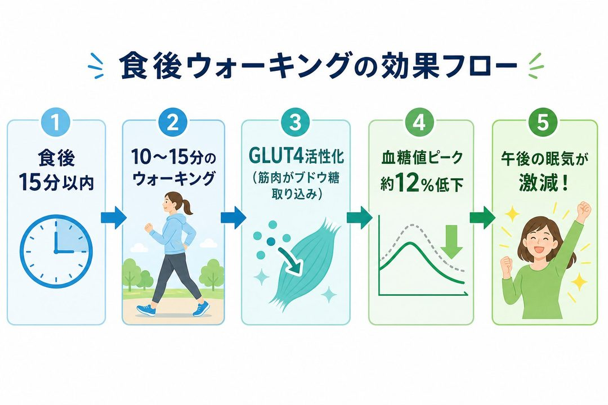
食後ウォーキングの効果フロー
オフィスでできる「ちょこちょこ歩き」
「昼休みが短くて歩けない」という場合のアレンジ法を紹介する。
階段の往復: ビルの階段を1〜2フロア往復するだけで十分な効果がある。
研究で「階段上りが食後血糖値ピークを有意に低下させる」と報告されている。
立って仕事: 食後30分だけスタンディングデスクで仕事をする。
座っているより血糖処理が15〜20%効率的だ。
ちょこちょこ歩き: 3分歩く→座る→3分歩く→座るを繰り返す「スネイリングムーブメント」でも効果がある。
外に出る会議: 食後の短い打ち合わせを「歩きながら会議」にするのもよい。
1対1のミーティングなら「ウォーキングミーティング」として提案してみよう。
テクニック2: 酢の活用「アシッドブレーキ」
酢が血糖値スパイクを抑える2つのメカニズム
酢（酢酸）は食前または食中に摂取することで血糖値スパイクを抑制する効果がある。
メカニズム1: 胃の排出速度を遅らせる
酢酸が胃の蠕動運動を抑制し、胃から小腸への食べ物の移動速度を遅らせる。
食べ物がゆっくり小腸に到達するため、糖の吸収がゆっくりになり、血糖値の急上昇が防げる。
メカニズム2: 炭水化物分解酵素の阻害
酢酸は、でんぷんを糖に分解する酵素（アミラーゼ・グルコシダーゼ）の働きを部分的に阻害する。
消化・吸収速度が下がることで、血糖上昇が緩やかになる。
科学的データ
複数の研究で、食前に酢を摂取すると食後血糖値が20〜35%低下することが示されている。
2型糖尿病患者を対象にした研究では、就寝前に水で薄めた酢を飲むことで翌朝の空腹時血糖値が下がった報告もある。
実践方法: 「酢水」「ドレッシング」「酢の物」から選ぶ
酢の摂取量の目安は大さじ1（15ml）だ。
これを食前または食事中に摂取する。
酢水: 水200mlに酢大さじ1を加えて食前に飲む。
慣れるまでは蜂蜜を少量加えてもよい（ただし蜂蜜は血糖値を上げるので最小限に）。
ドレッシング: 食事の最初に食べるサラダに、酢ベースのドレッシングをかけて食べる。
ベジファーストと組み合わせることで相乗効果が得られる。
酢の物: 昼食のサイドに酢の物（きゅうり・わかめ・タコなど）を追加する。
コンビニでも販売されているため、実践しやすい。
ポン酢: 肉や魚料理にポン酢をかけて食べる。
醤油の代わりにポン酢を使うだけで酢の効果が得られる。
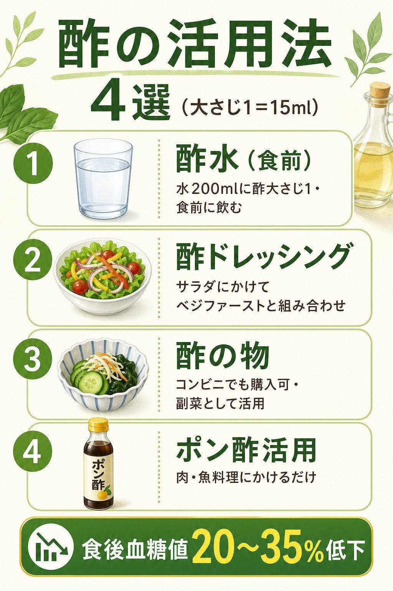
酢の摂取方法と効果
酢の選び方と注意点
おすすめの酢: 米酢・穀物酢・りんご酢・バルサミコ酢など、純粋な酢ならどれでもよい。
バルサミコ酢は甘みがあるため飲みやすく、サラダドレッシングとしても使いやすい。
注意点: 酢は歯のエナメル質を溶かす可能性があるため、酢水を飲む場合はストローを使うか、飲んだ後に水でうがいをすることを推奨する。
また、胃が弱い人は空腹時の摂取を避け、食事中に使用すること。
テクニック3: 朝食タンパク質で「今日一日」の血糖値を守る
朝食が昼食・夕食の血糖値を決める
「セカンドミール効果」を覚えているだろうか（第2章参照）。
朝食の内容が昼食・夕食後の血糖値に影響を与える現象だ。
早稲田大学の研究では、朝食でタンパク質を豊富に摂取した日は、昼食・夕食後の血糖値上昇が有意に抑制されることが示された。
朝食でGLP-1が分泌されると、そのホルモン効果が半日以上持続するためだ。
逆に、朝食を抜くと昼食後の血糖値スパイクが悪化することも確認されている。
朝食を抜いた日は、昼食後の血糖値ピークが朝食を食べた日より20〜30%高くなる可能性がある。
朝食タンパク質の目標量
体重1kgあたり0.3g程度のタンパク質を朝食で摂ることを目標にする。
体重60kgの人なら、朝食で18g以上のタンパク質を摂るのが理想だ。
主なタンパク質量の目安:
- 卵1個: タンパク質6g
- 納豆1パック: タンパク質8g
- ギリシャヨーグルト100g: タンパク質10g
- サラダチキン100g: タンパク質24g
- ゆで卵2個+納豆1パック: タンパク質20g（目標達成）
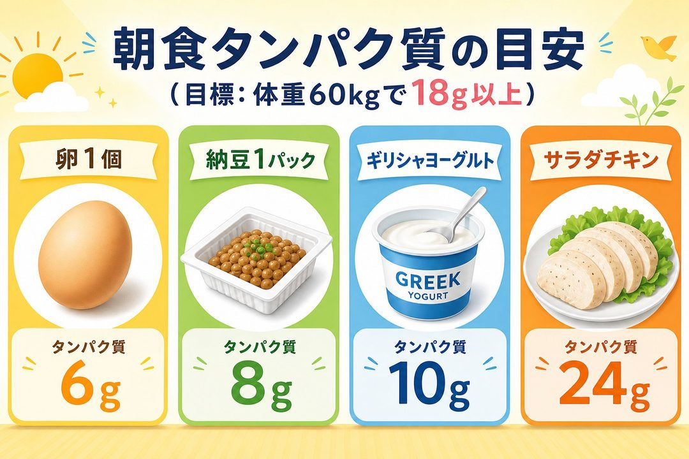
朝食タンパク質の目安と食品例
時間がない朝でもできるタンパク質強化
「朝は忙しくて料理する時間がない」という声はよく聞く。
以下の方法なら5分以内で実践できる。
ゆで卵の常備: 週末にまとめてゆで卵を作り、冷蔵庫に保存しておく。
毎朝2個食べるだけで12gのタンパク質が摂れる。
ギリシャヨーグルト+プロテインパウダー: ギリシャヨーグルト150g（約15g）にプロテインパウダー1スクープ（約20g）を混ぜると、1食で35gのタンパク質が摂れる。
サラダチキンの活用: コンビニで買えるサラダチキンをそのまま食べる。
1袋で20〜25gのタンパク質が摂れ、準備不要だ。
豆腐: 絹ごし豆腐半丁（約150g）で約8gのタンパク質。
電子レンジで温めてポン酢で食べるだけ。
前日の残り物: 夕食で余った焼き魚や肉を翌朝食べる。
「昨日の残り物」を朝食に活用する「リセット朝食」習慣は、タンパク質補給と食材の無駄削減を同時に達成できる。
テクニック4（ボーナス）: 緑茶・コーヒーの賢い活用
緑茶のカテキンが血糖値スパイクを抑える
緑茶に含まれるカテキンは、腸での糖の吸収を抑制する効果がある。
食事前後に緑茶を飲む習慣を取り入れることで、血糖値スパイクを10〜15%程度抑えられる可能性がある。
ただし、エナジードリンクやスポーツドリンクは砂糖が多く含まれ、血糖値スパイクを助長するため注意が必要だ。
「眠気覚ましにコーヒーを飲む」は有効だが、砂糖やシロップを加えると逆効果になる。
ブラックコーヒーが最適だ。
コーヒーに含まれるクロロゲン酸も糖の吸収を遅らせる効果があることが研究で示されている。
第4章のまとめ
食後15分以内に10〜15分のウォーキングで血糖値ピークが約12%低下する。
酢を大さじ1（15ml）食前・食中に摂取することで食後血糖値が20〜35%低下する。
朝食でタンパク質を18g以上摂ることでセカンドミール効果が働き、昼食・夕食後の血糖値も抑制される。
緑茶（カテキン）・ブラックコーヒー（クロロゲン酸）も食後血糖上昇の抑制に役立つ。
3つのテクニックは同時に使うと相乗効果がある。
一つずつ試して、無理なく習慣化しよう。
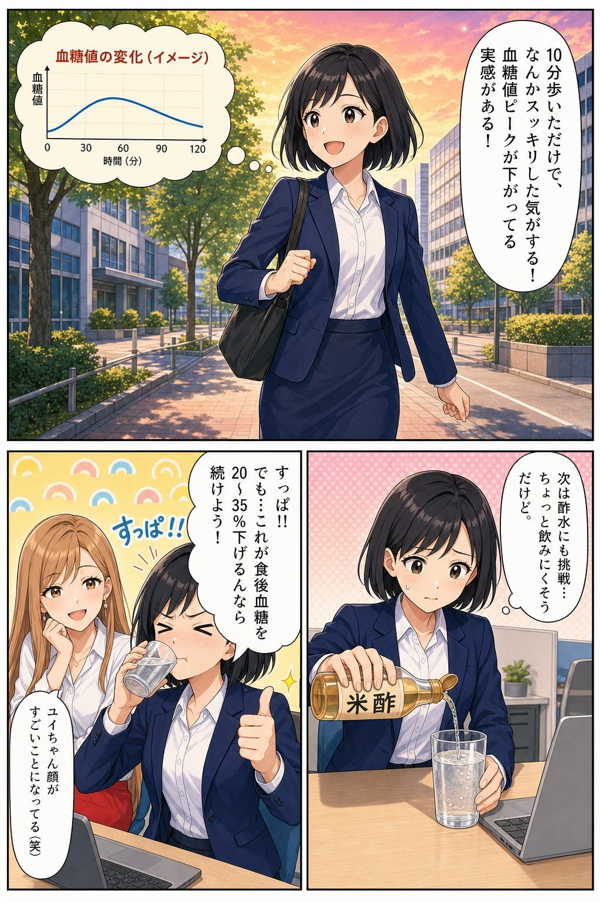
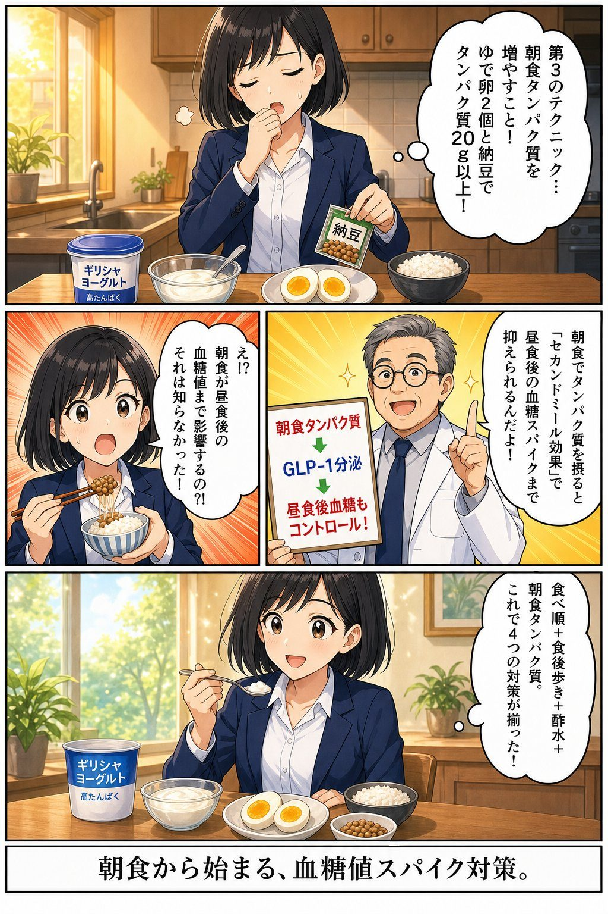
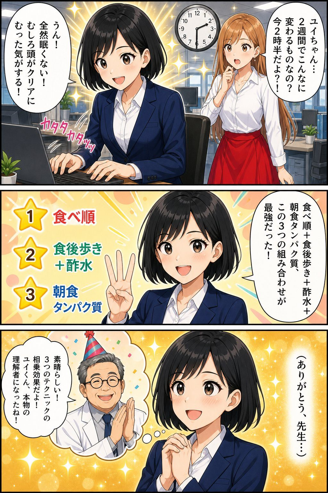
06第5章: 習慣化と環境設計〜眠気ゼロの午後を仕組みで作る
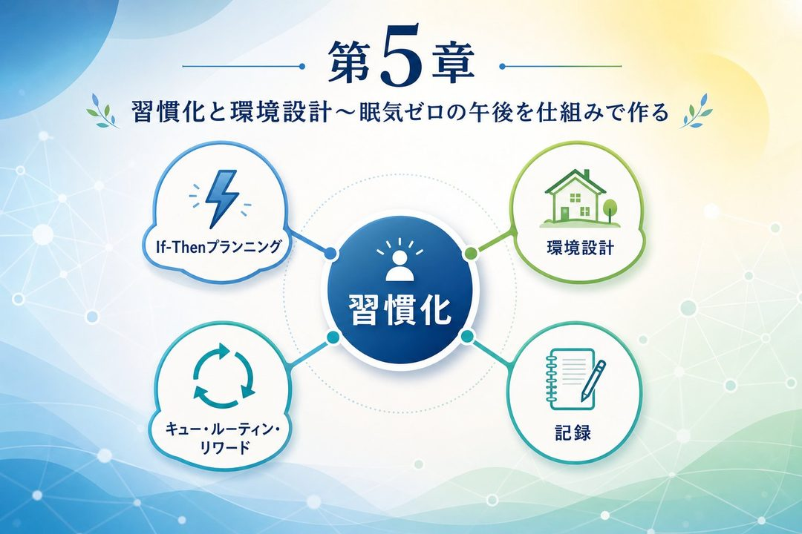
第5章 習慣化と環境設計
なぜ「わかっているのにできない」のか
「食べ順を変えれば良いとわかっている。 食後に歩けば良いとわかっている。 でも、できない。」
多くの人がこのジレンマに悩む。
これは意志力の問題ではなく、脳の仕組みの問題だ。
人間の脳には「現在バイアス」という特性がある。
目先の快楽（おいしいものを先に食べる、食後すぐ座る）を、将来の利益（眠気がなくなる、血糖値が改善する）よりも強く優先する性質だ。
だからこそ、意志力に頼らず「やらないと気持ち悪い」環境を作ることが重要なのだ。
行動経済学の知見を活用した「習慣化の仕組み作り」が、長期的な血糖値管理の鍵となる。
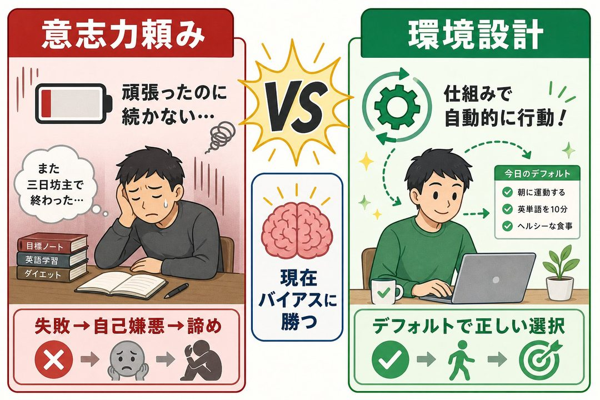
意志力頼みvs環境設計
習慣化の科学: キュー・ルーティン・リワードの3ステップ
習慣は「キュー（引き金）→ルーティン（行動）→リワード（報酬）」の3ステップで形成される。
キュー（引き金）: 行動を引き起こすシグナル。
時間・場所・感情・直前の行動などが引き金となる。
ルーティン（行動）: キューに反応して実行する行動そのもの。
リワード（報酬）: 行動後に得られる満足感。
リワードがないと習慣は定着しない。
血糖値スパイク対策の習慣化に当てはめると:
- キュー: 「昼食を食べ終わった」
- ルーティン: 「10分間歩く」
- リワード: 「午後の会議で眠くならなかった（達成感）」
リワードが実感できるまでには数日から数週間かかる。
最初は「歩いた後にお気に入りのコーヒーを飲む」などの即時リワードを設定することで、習慣が定着しやすくなる。
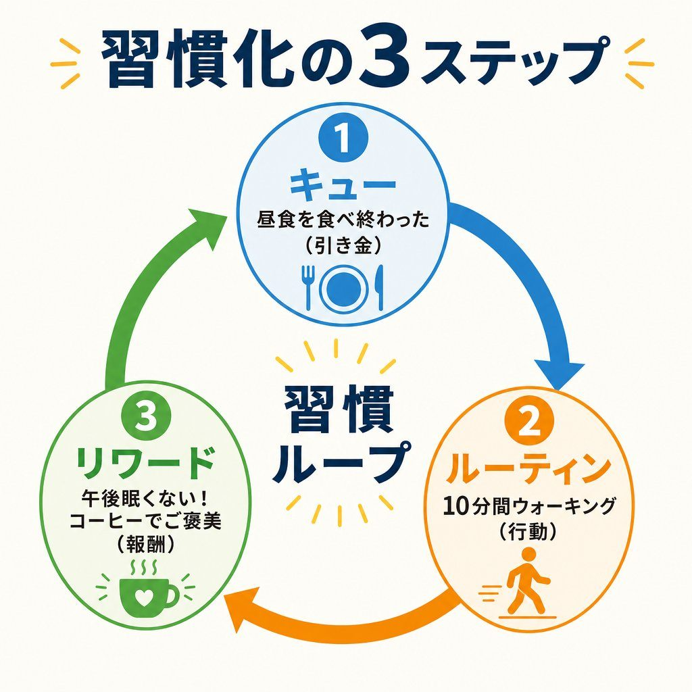
習慣化の3ステップ
If-Thenプランニングで行動を自動化する
「If-Thenプランニング」は、「もし〇〇なら、△△する」という形式で行動をあらかじめ決めておく習慣化技法だ。
普通の決意「食後は歩こう」よりも、If-Then形式「もし昼食を食べ終わったら、すぐに席を立って3分歩く」のほうが、実行率が大幅に高いことが複数の心理学研究で示されている。
血糖値スパイク対策のIf-Thenプランニング例:
食べ順版:「もし定食を注文したら、最初に小鉢（野菜）から食べる」
食後運動版:「もし昼食を食べ終わったら、時計を見てから10分だけビルの外に出る」
酢版:「もし会社のランチタイムになったら、まず酢水を一口飲む」
朝食版:「もし月曜の朝に起きたら、冷蔵庫のゆで卵2個を食べてから着替える」
If-Thenプランニングのポイントは具体的であることだ。
「いつ、どこで、何を」まで決めておくことで、脳が事前にシミュレーションし、実際の場面で自動的に行動が引き出される。
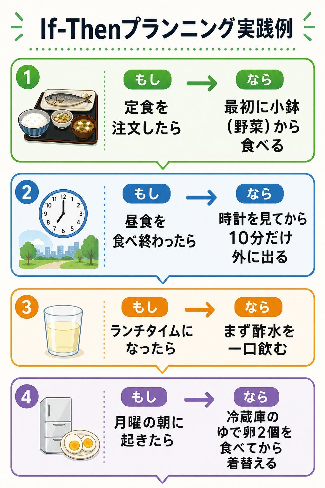
血糖値スパイク対策のIf-Thenプランニング例
環境設計: 「正しい選択が最も簡単な選択」になる仕掛け
意志力に頼らず良い行動を自動的に行うための「環境設計」の実例を紹介する。
職場の環境設計
デスクの上に酢水ボトル: 視界に入るところに酢水の入った水筒を置く。
見えるものを手に取るため、自然と飲む習慣がつく。
ヘルシースナックの常備: 引き出しの手前にナッツ・チーズ・ゆで卵を置き、菓子類は引き出しの奥にしまうか、そもそも職場に持ち込まない。
「見えるものを食べる」習慣を逆手にとった仕掛けだ。
ランチの行先を固定: 「月・水・金はサラダが豊富な定食屋」「火・木はコンビニで野菜サラダを先に買う」など、曜日ごとにデフォルトのランチ行動を決める。
カレンダーに「食後歩き」を設定: スマホカレンダーの昼食後の時間に「食後歩き（10分）」のリマインダーを設定する。
アラームが鳴ったら自動的に行動するようになる。
自宅の環境設計
冷蔵庫の配置変更: 野菜を冷蔵庫の目立つ場所（透明な容器に切り置きした状態で）に配置し、加工食品は奥に置く。
玄米・雑穀の常備: 白米と一緒に玄米パックや雑穀ミックスを置いておく。
炊く際に少量混ぜるだけで低GI化できる。
酢の物の作り置き: 週末にきゅうりの酢の物などを作り置きする。
平日の昼食・夕食にすぐ使えるようにしておく。
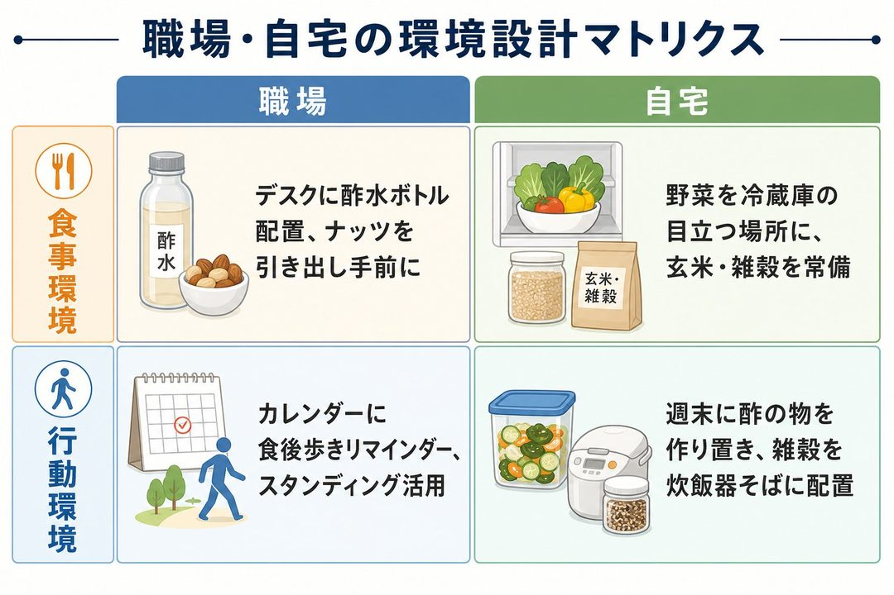
職場・自宅の環境設計マトリクス
睡眠の質が血糖値コントロールに与える影響
「睡眠不足は血糖値スパイクを悪化させる」という事実を知っているだろうか。
睡眠とインスリン感受性: 1週間の睡眠が6時間未満になると、インスリン感受性が健常時より25〜40%低下することが示されている。
インスリン感受性が低下すると、同じ食事でも血糖値スパイクが起きやすくなる。
コルチゾールの影響: 睡眠不足ではストレスホルモン「コルチゾール」が上昇する。
コルチゾールは肝臓でのグルコース産生を促進するため、空腹時血糖値が高くなる。
グレリンの上昇: 睡眠不足では食欲増進ホルモン「グレリン」が増加し、高カロリー・高糖質食への欲求が高まる。
食後の眠気が辛いからとコーヒーを飲みすぎると夜の睡眠が乱れ、翌日の血糖値コントロールがさらに悪化する悪循環に陥る。
推奨睡眠時間: 7〜8時間の睡眠を確保することが、血糖値コントロールの観点からも重要だ。
睡眠の質を高めるために、就寝2時間前からスマホを見ない・室温を18〜22度に保つ・カフェインを午後3時以降に摂らないなどの工夫をしよう。
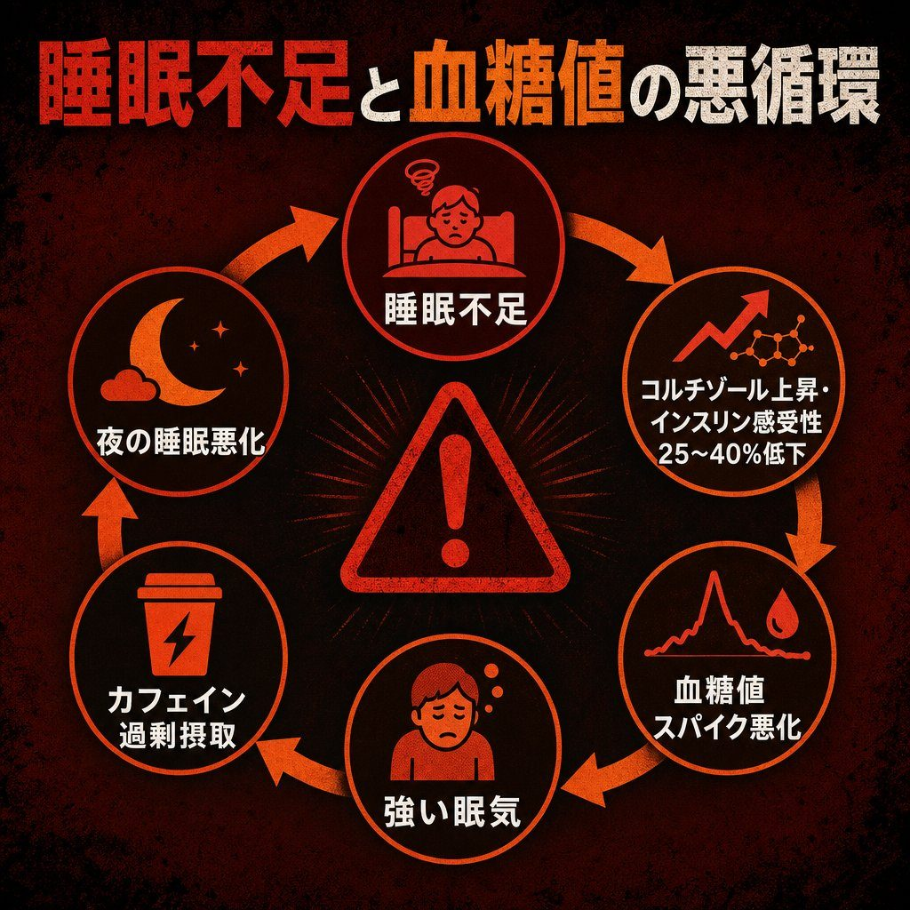
睡眠不足と血糖値の悪循環
ストレス管理も血糖値コントロールの一部
「ストレスが高い日は血糖値が上がりやすい」と感じたことはないだろうか。
これは錯覚ではなく、科学的に説明できる現象だ。
ストレスを感じると副腎からコルチゾールとアドレナリンが分泌される。
これらのホルモンは「戦うか逃げるか（fight or flight）」反応を準備するために、肝臓にグルコースを放出させる。
これにより、食事をしていなくても血糖値が上昇する。
慢性的なストレスは血糖値を慢性的に高め、インスリン抵抗性を進行させる。
ストレス管理の実践法:
10分の深呼吸・瞑想: ランチ後の歩きながら、または午後のコーヒーブレイクに、深呼吸を10回行う。
副交感神経が優位になりコルチゾールが低下する。
マインドフルイーティング: 食事中はスマホを見ず、味・食感・香りに集中する。
これだけで食事に伴うストレスが減り、消化が改善する。
軽い運動の継続: 週3〜4回の30分程度の有酸素運動はコルチゾールを慢性的に低下させ、インスリン感受性を向上させる。
30日チャレンジ: 段階的な習慣化プログラム
いきなり全ての対策を実践しようとするのは失敗のもとだ。
以下の「30日チャレンジ」で、一つずつ確実に習慣化しよう。
Week 1（1〜7日目）: 食べ順を変えるだけ 毎食「野菜→タンパク質→炭水化物」の順番を守ることだけに集中する。 他は何も変えなくていい。
Week 2（8〜14日目）: 食後歩きを追加
食べ順に加えて、昼食後10分のウォーキングを習慣化する。
If-Thenプランニングを設定する。
Week 3（15〜21日目）: 酢を食事に取り入れる
サラダドレッシングに酢を使う、または昼食前に酢水を一杯飲む習慣を追加する。
Week 4（22〜30日目）: 朝食タンパク質を増やす
朝食の内容を見直し、タンパク質を18g以上摂れるよう食品を準備する。
30日後には「食べ順+食後歩き+酢+朝食タンパク質」の4つが自然な習慣になっているはずだ。
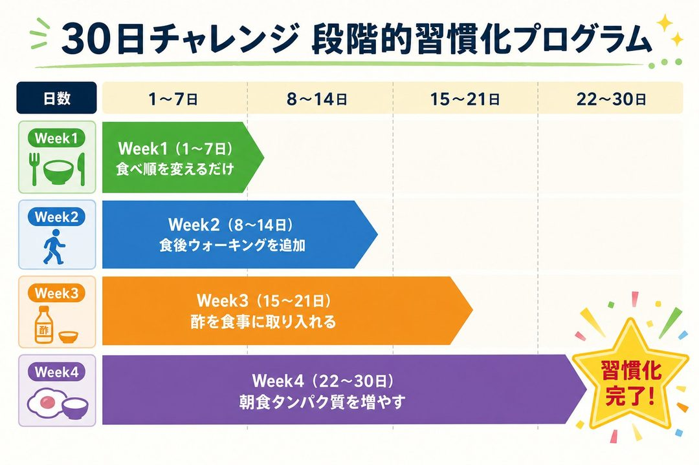
30日チャレンジ習慣化プログラム
自分の変化を記録する
習慣化を成功させるための最強の道具が「記録」だ。
眠気日記: 毎日午後2時の眠気レベルを1〜10点で記録する。
習慣化が進むにつれて点数が下がるのを見ることで、継続モチベーションが維持できる。
食事写真: 昼食の写真を撮るだけで、食べ順の意識が高まる。
後から見返すことでパターンを把握できる。
体調メモ: 「今日は食後歩きをした→眠くならなかった」「今日はうどんだけだった→14時に落ちた」などのメモが、自分のトリガーと効果を学習させてくれる。
第5章のまとめ
意志力に頼らず、キュー→ルーティン→リワードの習慣ループとIf-Thenプランニングで行動を自動化することが長続きの秘訣だ。
職場・自宅の環境設計で「正しい選択が最も簡単な選択」になる仕掛けを作ろう。
睡眠不足はインスリン感受性を25〜40%低下させ、血糖値スパイクを悪化させる。
7〜8時間の睡眠確保が重要だ。
ストレス管理（深呼吸・マインドフルイーティング・適度な運動）も血糖値コントロールの一部だ。
30日チャレンジで一つずつ習慣化し、眠気ゼロの午後を仕組みで手に入れよう。
07おわりに: 眠気ゼロの午後を手に入れよう
おわりに
本書を最後まで読んでいただき、ありがとうございます。
ここで、本書で学んだことを振り返ろう。
日中の眠気の最大の原因は血糖値スパイクだ。
食後に血糖値が急上昇し、インスリンが過剰分泌され、血糖値が急降下することで脳がエネルギー不足になる。
この生理現象が午後の強烈な眠気の正体だ。
しかし、この現象は食べ順・食品選択・食後運動・酢・朝食タンパク質・習慣化と環境設計という6つのアプローチで確実に改善できる。
どれも今日から始められる。
特別な道具も、高価なサプリメントも、過酷な食事制限も必要ない。
最初の一歩として、明日の昼食からこの一つだけ試してみてほしい。
「サラダかお浸しを最初に食べ、ご飯は最後にする」。
これだけだ。
一週間続けると、変化に気づくはずだ。
午後の眠気が和らいだ。
集中力が続くようになった。
コーヒーへの依存が減った。
そんな変化を感じたら、次のステップへ進もう。
あなたの体は変わることができる。
血糖値スパイクのない、エネルギッシュな午後を手に入れることは、あなたが思っているより簡単だ。
一日一日の小さな積み重ねが、数週間後のあなたを全く別の存在に変える。
眠気のない午後が、あなたを待っている。
今日から始めよう。
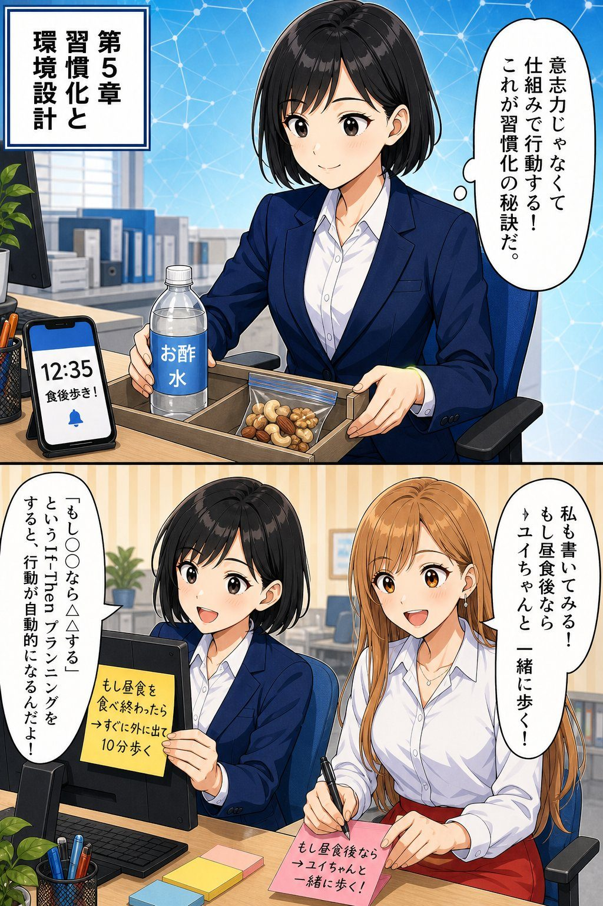
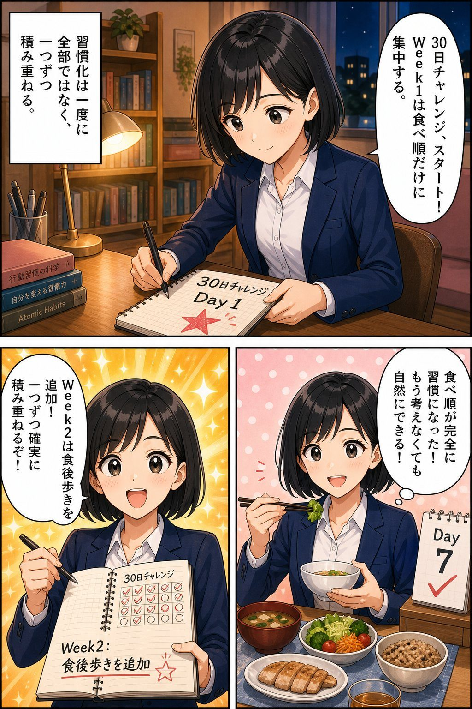
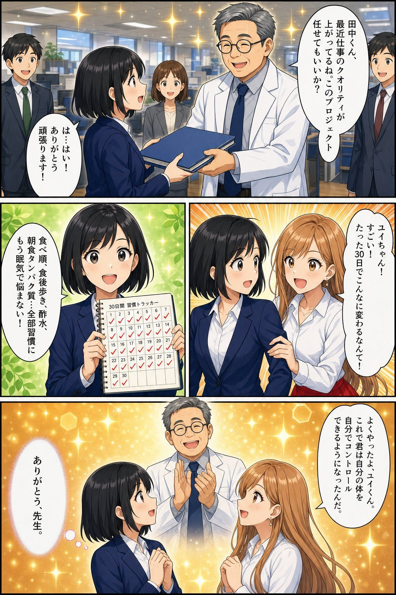
© 竹谷知悦 / 特別プレゼント版